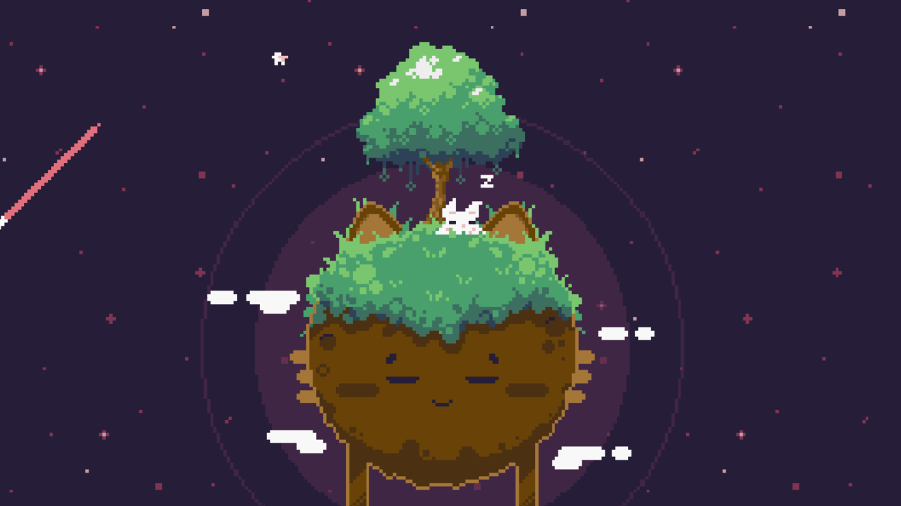
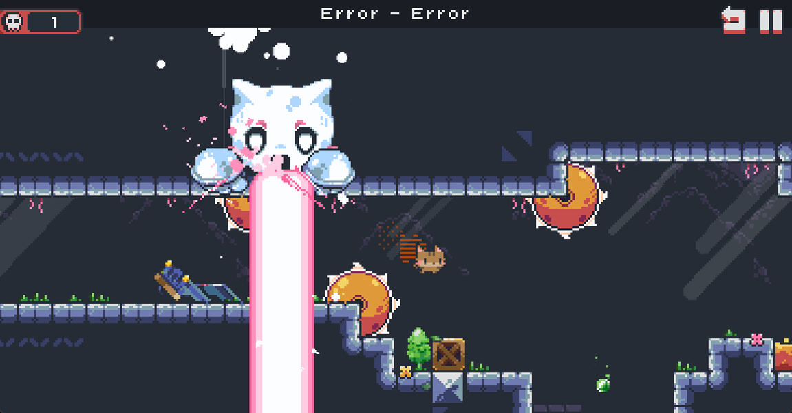
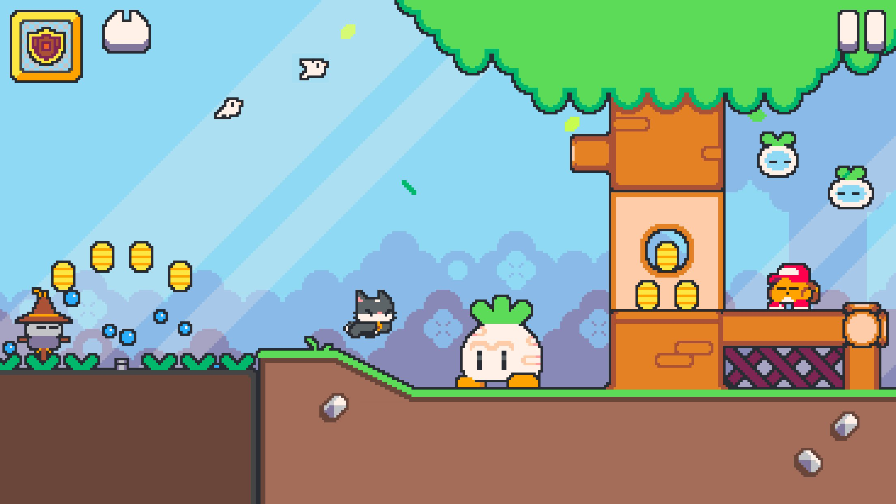
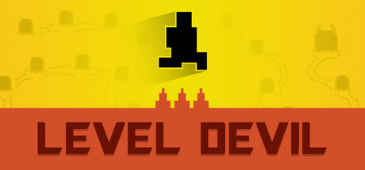
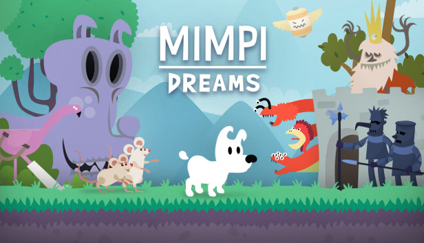
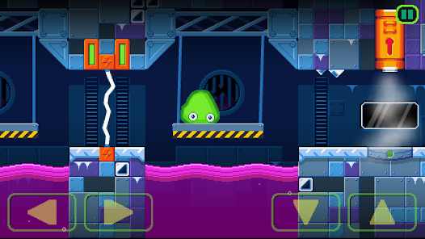

Lista
Aqui está uma descrição mais detalhada do porque eu escolhi essa seleção. Se serve para me dar uma colher de chá, a maior parte deles tem uma ótima avaliação na Play Store.
Aliás, trago um áudio temático do primeiro item dessa lista; caso queira ouvir enquanto navega.
Cat bird
No jogo, você controla um gato que parece estar misturado com um passáro. Na época, até pensei que se encaixaria em um morcego branco também. Ele tem uma ótima jogabilidade, embora existam alguns desafios irritantes. Porém, depois que conheci o próximo jogo que vou citar na lista, que é da mesma empresa (Rayumi), percebi que ele é muito mais fácil.
Ele "viaja" entre mundos, enquanto busca o caminho de volta para casa.

Kitty death Room
Esse é um dos mais dificeis da lista. Ele usa um mecanismo de "invocar" um gato que na teoria, está morto, para poder passar pelos obstaculos. Porém, as vezes você tem que fazer essa troca muito agilmente. Tenho certeza que muitos o odeiam por isso também.
Ele também tem uma história interessante, pois cada nível é seguido de um lugar chamado "void". Apesar disso, não há um aprofundamento muito grande do que é aquilo.
Um ponto negativo é que o progresso que você fez no nível não é salvo se você morrer no "void", que é como um segundo nível embutido, só que geralmente mais fácil.

Super cat tales
Esse eu joguei há muito tempo atrás. É sobre gatos que lutam em equipe, cada um com habilidades diferentes. Também há mais dialogos, o que dá mais espaço pra desenvolver eles.
A jogabilidade também é boa, por mais que, pessoalmente, ache que os inimigos são mais irritantes em comparação aos outros jogos listados até agora. Você basicamente pressiona nos dois cantos da tela para ele ir para a direita e esquera, e pressionando duas vezes voxê pula.
Você também precisa coletar alguns sinos para passar de algumas fases.
Lembro que começei a gostar mais desse jogo por acompanhar a empresa, Neutronized, no youtube.

Level Devel
Esse é bem conhecido. É um jogo troll, em que o desenvolvedor tenta fazer "pegadinhas" para quem está jogando. Ele é muito divertido, mas também fica muito dificil conforme os niveis passam. Eu recomendo ele mesmo que não tenha muita experiência, porque as coisas nunca vão sair como você espera.
Eu, por exemplo, ainda não passei da penultima fase. Mas talvez tenha que atualizar esse relato, pois parece ter obtido novas atualizações.

Mimpi dreams
Esse é, realmente, por puro saudosismo. É sobre um cachorro que vive em um mundo dos sonhos. Ok, isso é bem auto explicativo, mas ainda assim é um jogo ótimo.

Obs: Eu pensei em colocar slime labs nessa lista, por ser um jogo "engraçado" - você controla uma amoeba, então você não tem o mesmo controle em comparação com os outros jogos. Mas fiquei com rancor da Neutronized, por apenas permitir que o final será liberado se você coletar todos os itens. É um jogo dificil nesse sentido. Ainda assim, recomendo.

Eu provavelmente vou criar uma lista mais completa depois, de outras categorias de jogos que também gosto.